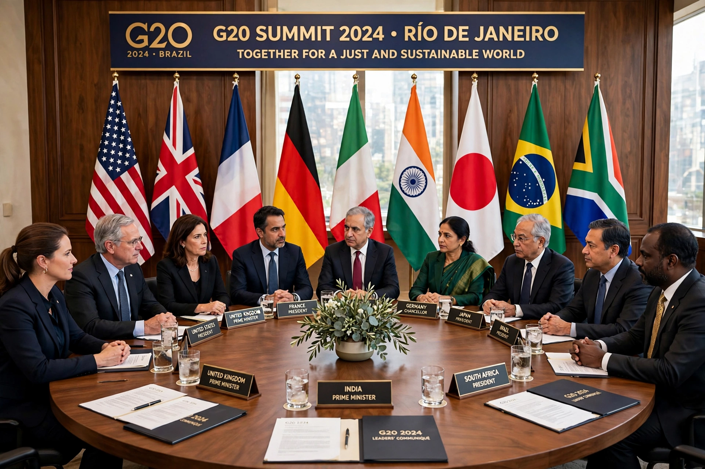

A summit is a meeting between heads of state or heads of government, usually with considerable media exposure, pre-arranged agendas and security, and a set of pre-negotiated outcomes or declarations. Summitry became a central instrument of diplomacy in the twentieth century.
The term gained currency in the Cold War, from the Geneva Summit of 1955 and the superpower summits between American and Soviet leaders, through episodes such as the Reykjavík Summit of 1986 between Ronald Reagan and Mikhail Gorbachev. Earlier antecedents include the Congress of Vienna (1815) and the wartime conferences at Yalta and Potsdam.
Many summits are now institutionalised and recurring: the G7 and G20 summits, European Council meetings, NATO summits, APEC and ASEAN summits, and the annual sessions associated with the UN General Assembly. Such meetings allow leaders to build personal relationships, unblock negotiations stalled at lower levels, and signal priorities to domestic and international audiences.
Critics argue that summits can be heavy on ceremony and communiqués and light on implementation, that their agendas are dominated by the host and great powers, and that large summits attract protests and impose heavy security costs on host cities.